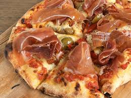

Pizza Espanola

spanische Pizza mit Serranoschinken, viel Mozzarella und Oliven
Zutaten:
Für den Teig:
- 250g Weizenmehl (Typ 550)
- 130ml Milch
- 40ml Olivenöl
- 1 TL Zucker
- 1 TL Trockenhefe
- 1 Prise(n) Salz
Für den Belag:
- 1/2 Dose Pizzatomaten
- 1 Knoblauchzehe
- Oregano
- Salz und Pfeffer
- 1 Kugel Mozarella
- 1 Tomate
- 50g Oliven
- 100g Schinken
Zubreitung:
- Aus den Teigzutaten einen nicht klebenden, leicht formbaren Teig kneten und diesen an einem warmen Ort zugedeckt 30 Minuten gehen lassen. Den Teig ausrollen und auf ein mit Backpapier ausgelegtes Backblech legen.
- Die gehackten Tomaten kräftig mit Knoblauch, Oregano, Salz und Pfeffer würzen. Den Pizzateig damit bestreichen. Die Tomate waschen, in dünne Scheiben schneiden und gleichmäßig auf dem Pizzateig verteilen.
- Den Mozzarella in dünne Scheiben schneiden und die Tomaten damit bedecken. Die Oliven halbieren und auf den Mozzarella legen. Die Pizza mit einer Prise Salz und etwas Oregano bestreuen.
- Im vorgeheizten Backofen bei maximaler Temperatur ca. 10 - 15 Minuten backen, bis der Rand knusprig und braun und der Käse leicht gebräunt und verlaufen ist. Vor dem Servieren die Schinkenscheiben auf der Pizza verteilen.